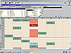
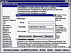
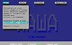

Sergey V. Musenko |
« back |
Participation in C++/Win projects |
|
* On this page listed only large and completed projects.
|
|

August 2002
| |
School Schedule
Schedule compilation program for secondary school.
Visual interface with highlighting of cells status helps to arrange lessons.
Program can print complete schedule on separate standard sheets.
Author's project.
Realization: Borland C++ Builder 5.0 (BDE, Paradox).
|
|
August 2001
| |
DataWall web-data access limitation
It's part of project "AmCham Ukraine".
Linux FCGI-application for authorized access to
web-site data files with caching function.
Author's project.
Realization: С++ (gcc).
|
|
August 2001
| |
Chat Daemon
It's part of Wap-Chat project.
Participation in developing of chat serving program.
Provides registration of users, creation/deleting of rooms, reception/sending of messages,
reading/writing data on disk. Working under Linux.
Realization: С++ (gcc).
|

September 2000
| |
Donor - registration office
System of automation of registry of Regional Station of Blood Transfusion, Sumy, Ukraine.
Accounting of delivery of blood (more than 30 thousand records),
search of the donor in several criteria, automatic check for absence
in "black list" or contacting with persons from "black list",
printing of directions and certificates, data archiving.
Author's project.
Realization: Borland C++ Builder 5.0 (BDE, Paradox).
|
|

February 1994
| |
BBASE - a bibliographic database
Small Windows-application for processing the bibliographic data
(viewing, sorting, searching, filtering, printing), stored in
dbf-files. It was submitted by "Maxima" firm at Comtek exhibition in
Moscow in March, 1994.
Author's project.
Realization: Borland Turbo C 3.0, OWL, CodeBase.
|
|

1991-2000
| |
KASHA - hospital kitchen
The program for automation of accounting and rating of economic efficiency of
hospital kitchen. Allows receiving every required documents and reports.
The program works under MS-DOS/Windows9x.
More than 12 years it still working in three hospitals of Sumy, Ukraine.
Author's project.
Realization: Clipper 5.2
|
|